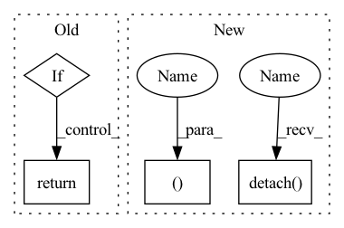

Pattern ID :914

Before Change
if self.mode == "mse":
return ((fea_s-fea_t)**2).mean() * self.factor
if self.mode == "pdf":
with torch.no_grad():
x1 = conf_t.sigmoid()
x2 = conf_s.sigmoid()
disagree = (x1 - x2) ** 2
disagree = disagree.sum(-1).unsqueeze(1).sqrt()
if self.multi_anchor:
disagree = F.avg_pool1d(disagree, kernel_size=6, stride=6, padding=0)
disagree = disagree.permute(0,2,1).expand_as(fea_t)
weight = disagree / disagree.sum()
return (weight*((fea_s-fea_t)**2)).sum() * self.factor
raise NotImplementedError
After Change
def forward(self, pred_t, pred_s, priors, targets):
loc_t, conf_t, fea_t = pred_t["loc"], pred_t["conf"], pred_t["feature"]
loc_t, conf_t, fea_t = loc_t.detach(), conf_t.detach(), fea_t.detach()
loc_s, conf_s, fea_s = pred_s["loc"], pred_s["conf"], pred_s["feature"]
if self.mode == "mse":
In pattern: SUPERPATTERN
Frequency: 3
Non-data size: 4
Instances
Fragment ID: 2829147
Project Name: zhangheng19931123/mutualguide
Commit Name: d9f6d3090253f102f88a9b09b343ba674d3a4367
Time: 2021-12-08
Author: heng.zhang@irisa.fr
File Name: utils/loss/hint_loss.py
M Class Name: HintLoss
N Class Name: HintLoss
M Method Name: forward(5)
N Method Name: forward(8)
M Parent Class: nn.Module
N Parent Class: nn.Module
M File Name: utils/loss/hint_loss.py
N File Name: utils/loss/hint_loss.py
M Start Line: 18
M End Line: 35
N Start Line: 20
N End Line: 46
'>
Before Change
if self.mode == "mse":
return ((fea_s-fea_t)**2).mean() * self.factor
if self.mode == "pdf":
with torch.no_grad():
x1 = conf_t.sigmoid()
x2 = conf_s.sigmoid()
disagree = (x1 - x2) ** 2
disagree = disagree.sum(-1).unsqueeze(1).sqrt()
if self.multi_anchor:
disagree = F.avg_pool1d(disagree, kernel_size=6, stride=6, padding=0)
disagree = disagree.permute(0,2,1).expand_as(fea_t)
weight = disagree / disagree.sum()
return (weight*((fea_s-fea_t)**2)).sum() * self.factor
raise NotImplementedError
After Change
def forward(self, pred_t, pred_s, priors, targets):
loc_t, conf_t, fea_t = pred_t["loc"], pred_t["conf"], pred_t["feature"]
loc_t, conf_t, fea_t = loc_t.detach(), conf_t.detach(), fea_t.detach()
loc_s, conf_s, fea_s = pred_s["loc"], pred_s["conf"], pred_s["feature"]
if self.mode == "mse":
'>
Fragment ID: 2829146
Project Name: zhangheng19931123/mutualguide
Commit Name: d9f6d3090253f102f88a9b09b343ba674d3a4367
Time: 2021-12-08
Author: heng.zhang@irisa.fr
File Name: utils/loss/hint_loss.py
M Class Name: HintLoss
N Class Name: HintLoss
M Method Name: forward(5)
N Method Name: forward(8)
M Parent Class: nn.Module
N Parent Class: nn.Module
M File Name: utils/loss/hint_loss.py
N File Name: utils/loss/hint_loss.py
M Start Line: 18
M End Line: 35
N Start Line: 20
N End Line: 46
'>
Before Change
return softmax
def forward(self, logits, samples, soft):
if samples is None:
return self.gumbel_softmax(logits, self._temperature, self._eps, hard=True)
else:
return -torch.sum(-samples * F.log_softmax(logits, -1), -1)
After Change
def forward(self, logits: torch.Tensor, tau: float = 1, hard: bool = False, dim: int = -1):
gumbels = -torch.empty_like(logits, memory_format=torch.legacy_contiguous_format).exponential_().log() // ~Gumbel(0,1)
gumbels = (logits + gumbels) / tau // ~Gumbel(logits,tau)
y_soft = gumbels.softmax(dim)
if hard:
// Straight through.
index = y_soft.max(dim, keepdim=True)[1]
y_hard = torch.zeros_like(logits, memory_format=torch.legacy_contiguous_format).scatter_(dim, index, 1.0)
ret = y_hard - y_soft.detach() + y_soft
else:
// Reparametrization trick.
ret = y_soft
return ret, y_soft
'>
Fragment ID: 2829143
Project Name: xiaosu-zhu/mcquic
Commit Name: e12be331e275549e5b8a7ef6a7c8dbf6d4e387bf
Time: 2021-04-08
Author: xiaosu.zhu@outlook.com
File Name: src/mcqc/layers/gumbelSoftmax.py
M Class Name: GumbelSoftmax
N Class Name: GumbelSoftmax
M Method Name: forward(5)
N Method Name: forward(4)
M Parent Class: nn.Module
N Parent Class: nn.Module
M File Name: src/mcqc/layers/gumbelSoftmax.py
N File Name: src/mcqc/layers/gumbelSoftmax.py
M Start Line: 40
M End Line: 44
N Start Line: 8
N End Line: 21